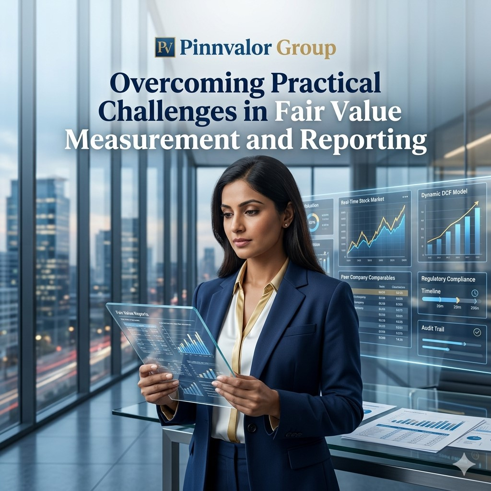

Overcoming Practical Challenges in Fair Value Measurement and Reporting
Fair value measurement has become a cornerstone of modern financial reporting, providing stakeholders with a market-based view of an entity's assets and liabilities. As businesses operate in increasingly dynamic and complex environments, fair value reporting enhances transparency, comparability, and decision-making. However, while the concept appears straightforward in theory, its practical implementation often presents significant challenges.
What separates reliable fair value reporting from costly valuation mistakes?
FinancialTransparency starts with understanding the true value of assets and liabilities. Effective fair value reporting bridges the gap between numbers and reality.
Organizations frequently encounter difficulties in determining appropriate valuation methodologies, obtaining reliable market data, assessing assumptions, and meeting extensive disclosure requirements. These challenges become even more pronounced when valuing complex financial instruments, intangible assets, investment properties, and business combinations.
This article explores the key practical challenges associated with fair value measurement and reporting, along with strategies that organizations can adopt to improve accuracy, compliance, and stakeholder confidence.
Understanding Fair Value Measurement
Under accounting frameworks such as IFRS 13 Fair Value Measurement and ASC 820 (US GAAP), fair value is defined as:
"The price that would be received to sell an asset or paid to transfer a liability in an orderly transaction between market participants at the measurement date."
Fair value is a market-based measurement rather than an entity-specific value. The objective is to estimate the exit price that market participants would use under current market conditions.
Fair value measurement applies to numerous accounting areas, including:
- Financial instruments
- Investment properties
- Business combinations
- Impairment testing
- Share-based payments
- Biological assets
- Intangible assets
- Derivative contracts
The Fair Value Hierarchy
A fundamental aspect of fair value reporting is the three-level hierarchy established by IFRS 13.
Level 1 Inputs
Quoted prices in active markets for identical assets or liabilities.
Examples:
- Listed equity shares
- Government bonds traded on active exchanges
Level 2 Inputs
Observable inputs other than quoted market prices.
Examples:
- Interest rate curves
- Credit spreads
- Comparable market transactions
Level 3 Inputs
Unobservable inputs based on management assumptions.
Examples:
- Discounted cash flow models
- Private company valuations
- Certain intangible assets
As organizations move from Level 1 to Level 3 measurements, estimation uncertainty increases significantly.
Key Practical Challenges in Fair Value Measurement and Reporting
1. Lack of Active Market Data
One of the most common challenges arises when no active market exists for the asset or liability being measured.
Examples include:
- Private equity investments
- Startups
- Specialized machinery
- Intellectual property
- Long-term contractual rights
Without observable market prices, companies must rely heavily on valuation models and assumptions.
Impact:
- Increased subjectivity
- Higher audit scrutiny
- Greater risk of valuation errors
- Reduced comparability across entities
Best Practice: Establish robust valuation policies and regularly benchmark assumptions against available market evidence.
2. Selecting the Appropriate Valuation Technique
Fair value standards generally recognize three valuation approaches:
Market Approach
Uses prices and relevant information from comparable market transactions.
Income Approach
Converts future economic benefits into present value.
Examples:
- Discounted Cash Flow (DCF)
- Excess Earnings Method
- Relief-from-Royalty Method
Cost Approach
Reflects the replacement cost of an asset.
Choosing the wrong valuation methodology can materially distort financial statements.
Common Issues:
- Limited comparable transactions
- Incorrect discount rates
- Inappropriate cash flow projections
- Failure to consider market participant assumptions
Best Practice: Document the rationale for methodology selection and periodically reassess its suitability.
3. Managing Significant Judgment and Assumptions
Fair value measurement often requires management to make substantial judgments.
Key assumptions may include:
- Revenue growth rates
- EBITDA margins
- Discount rates
- Terminal growth rates
- Customer attrition rates
- Market risk premiums
Small changes in these assumptions can significantly impact reported values.
Example: A 1% increase in the discount rate may reduce the fair value of a business by millions of dollars.
Best Practice: Perform sensitivity analyses and maintain detailed documentation supporting critical assumptions.
4. Valuing Illiquid and Complex Financial Instruments
Complex instruments frequently pose valuation difficulties.
Examples include:
- Derivatives
- Structured products
- Convertible securities
- Private debt instruments
- Contingent consideration arrangements
Challenges include:
- Limited market activity
- Model complexity
- Counterparty credit risk
- Volatility assumptions
Best Practice: Utilize independent valuation specialists and implement robust model validation procedures.
5. Measuring Fair Value During Market Volatility
Market disruptions can significantly affect valuation reliability.
Periods of uncertainty may lead to:
- Reduced transaction volumes
- Increased bid-ask spreads
- Rapid price fluctuations
- Distressed transactions
Examples include:
- Global financial crises
- Pandemic-related disruptions
- Geopolitical conflicts
Practical Challenge: Determining whether observed market prices reflect orderly transactions or distressed sales.
Best Practice: Carefully assess market conditions and avoid relying solely on isolated transactions.
6. Fair Value Measurement of Intangible Assets
Valuing intangible assets remains one of the most complex areas in financial reporting.
Common intangible assets include:
- Brands
- Customer relationships
- Software
- Patents
- Trademarks
- Technology assets
Challenges:
- Lack of market comparables
- Difficulty estimating future benefits
- Rapid technological changes
- Legal and competitive uncertainties
Best Practice: Employ specialized valuation methodologies and regularly review assumptions for relevance.
7. Challenges in Business Combination Valuations
Under acquisition accounting standards, acquired assets and liabilities must be measured at fair value.
This requires valuation of:
- Tangible assets
- Intangible assets
- Contingent liabilities
- Deferred tax impacts
Common Issues:
- Tight reporting deadlines
- Incomplete information
- Identification of hidden intangible assets
- Integration-related uncertainties
Best Practice: Begin valuation planning early and involve valuation professionals throughout the acquisition process.
8. Ensuring Consistency Across Reporting Periods
Consistency is essential for meaningful financial reporting.
- Changes in valuation methodologies
- Updated assumptions
- New market information
- Portfolio growth
Frequent methodology changes may raise concerns among auditors, regulators, and investors.
Best Practice: Implement governance frameworks that ensure consistency while allowing justified updates when circumstances change.
9. Meeting Disclosure Requirements
Fair value reporting involves extensive disclosures, particularly for Level 3 measurements.
Required disclosures may include:
- Valuation techniques used
- Significant assumptions
- Input sensitivity analyses
- Fair value hierarchy classifications
- Reconciliation of Level 3 balances
Common Problems:
- Incomplete documentation
- Inconsistent disclosures
- Insufficient transparency
Best Practice: Develop standardized disclosure templates and integrate valuation documentation with financial reporting processes.
10. Audit and Regulatory Scrutiny
Fair value measurements often receive significant attention from auditors, regulators, tax authorities, investors, and governance bodies.

Commonly challenged areas include:
- Discount rates
- Forecast assumptions
- Comparable company selection
- Fair value hierarchy classification
Best Practice: Maintain comprehensive audit trails and independent review procedures.
The Role of Technology in Improving Fair Value Reporting
Technological advancements are transforming valuation processes and reporting efficiency.
Key Innovations:
- Data Analytics: Improves market benchmarking and trend analysis.
- Artificial Intelligence: Supports predictive modeling and anomaly detection.
- Valuation Software: Enhances consistency and documentation.
- Automated Reporting Tools: Reduce manual errors and improve disclosure quality.
Benefits:
- Increased efficiency
- Better transparency
- Enhanced accuracy
- Improved audit readiness
Building a Strong Fair Value Governance Framework
To address practical challenges effectively, organizations should establish a structured governance framework.
Essential Components:
- Valuation Policies: Define methodologies, approval procedures, and documentation standards.
- Independent Review: Conduct periodic reviews of assumptions and valuation outputs.
- Expert Involvement: Engage qualified valuation specialists for complex measurements.
- Internal Controls: Implement controls over data inputs, model changes, and reporting processes.
- Continuous Training: Keep finance teams updated on evolving accounting standards and valuation practices.
Emerging Trends in Fair Value Reporting
- Increased Regulatory Expectations – Greater emphasis on transparency and disclosure quality.
- Greater Use of ESG Factors – ESG considerations are increasingly influencing valuation assumptions.
- Expanded Use of Artificial Intelligence – AI-driven valuation tools are becoming more sophisticated.
- Enhanced Stakeholder Scrutiny – Investors demand deeper insights into valuation methodologies and assumptions.
Conclusion
Fair value measurement and reporting provide valuable insights into an organization's financial position, but they also introduce significant practical challenges. From selecting appropriate valuation methodologies and managing estimation uncertainty to navigating complex disclosures and regulatory scrutiny, organizations must exercise sound judgment and maintain robust governance processes.
By adopting disciplined valuation practices, leveraging technology, engaging qualified experts, and enhancing transparency, companies can overcome these challenges and deliver fair value information that is reliable, relevant, and decision-useful.
As financial reporting continues to evolve, organizations that invest in strong fair value frameworks will not only improve compliance but also strengthen stakeholder confidence and support better strategic decision-making.
Fair value reporting is not merely a compliance exercise—it is a critical tool for communicating economic reality in an increasingly complex business environment.